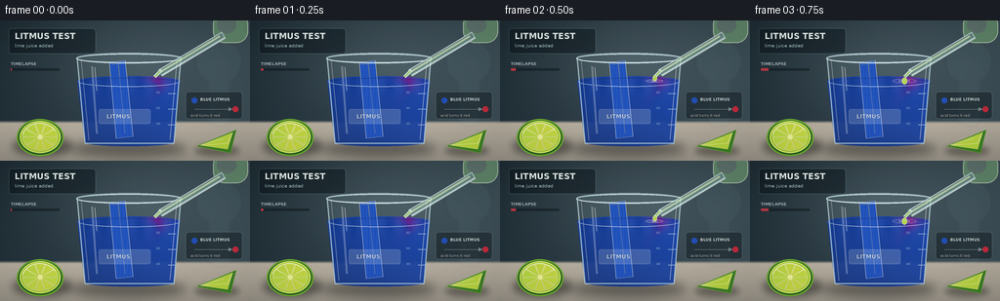
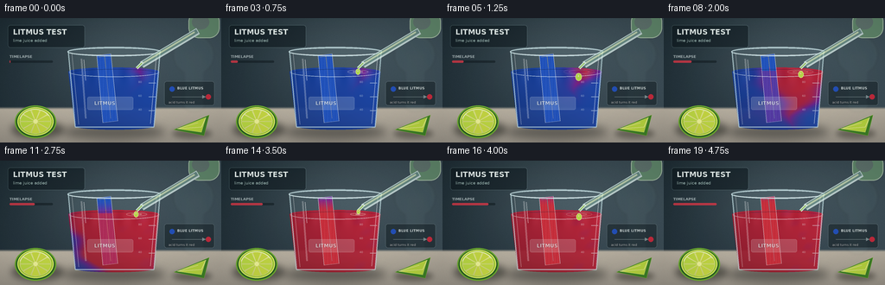

CODING AGENTS AS PIXEL WORLD MODELS
traex/GPT-5.6-Sol · material_0035
点击播放 · 原生 RGB 像素
逐轮保存的候选
回放视频、检查图与代码变化。
每份候选均可单独播放。实际图片检查记录在下方工具轨迹中。
候选 01播放与检查图
点击播放 · 原生 RGB 像素


展开代码变化
--- 上一保存版本
+++ 本次保存版本
@@ -0,0 +1,274 @@
+from pathlib import Path
+import math
+import numpy as np
+from PIL import Image, ImageDraw, ImageFont, ImageFilter
+import cv2
+import artifact_io
+
+# Deterministic, supersampled laboratory animation.
+W, H, N, FPS = 256, 144, 20, 4
+S = 4
+w, h = W*S, H*S
+rng = np.random.default_rng(35)
+HERE = Path(__file__).resolve().parent
+
+FONT_REG = "/usr/share/fonts/truetype/dejavu/DejaVuSans.ttf"
+FONT_BOLD = "/usr/share/fonts/truetype/dejavu/DejaVuSans-Bold.ttf"
+def font(px, bold=False):
+ return ImageFont.truetype(FONT_BOLD if bold else FONT_REG, px*S)
+
+def sc(v): return int(round(v*S))
+def box(b): return tuple(sc(v) for v in b)
+def pts(p): return [(sc(x),sc(y)) for x,y in p]
+
+def smoothstep(x):
+ x = np.clip(x, 0., 1.)
+ return x*x*(3-2*x)
+
+def make_background():
+ yy, xx = np.mgrid[0:h, 0:w]
+ # Cool, softly lit laboratory wall above a pale stone worktop.
+ wall = np.zeros((h,w,3), dtype=np.float32)
+ wall[...,0] = 27 + 25*(xx/w) + 8*(yy/h)
+ wall[...,1] = 42 + 27*(xx/w) + 8*(yy/h)
+ wall[...,2] = 49 + 28*(xx/w) + 10*(yy/h)
+ glow = np.exp(-(((xx-.54*w)/(.44*w))**2 + ((yy-.27*h)/(.42*h))**2))
+ wall += glow[...,None]*21
+ horizon = sc(104)
+ counter_y = np.clip((yy-horizon)/(h-horizon),0,1)
+ counter = np.stack([154+30*(1-counter_y), 148+28*(1-counter_y), 137+24*(1-counter_y)],axis=-1)
+ a = smoothstep((yy-horizon+sc(2))/sc(4))[...,None]
+ arr = wall*(1-a)+counter*a
+ # Fine film grain keeps the scene from looking flat.
+ noise = rng.normal(0,1.6,(h,w,1))
+ arr += noise
+ return Image.fromarray(np.uint8(np.clip(arr,0,255)), 'RGB').convert('RGBA')
+
+BASE = make_background()
+
+def draw_soft_ellipse(base, bounds, color, blur):
+ lay = Image.new('RGBA',(w,h),(0,0,0,0)); d=ImageDraw.Draw(lay)
+ d.ellipse(box(bounds), fill=color)
+ lay=lay.filter(ImageFilter.GaussianBlur(sc(blur)))
+ base.alpha_composite(lay)
+
+def draw_lime(img):
+ # Lime half, unmistakably cut, on the left foreground.
+ draw_soft_ellipse(img,(13,119,74,139),(10,14,8,125),4)
+ lay=Image.new('RGBA',(w,h),(0,0,0,0)); d=ImageDraw.Draw(lay)
+ d.ellipse(box((17,101,65,139)), fill=(37,94,33,255), outline=(108,169,48,255), width=sc(1.5))
+ d.ellipse(box((20,103,62,136)), fill=(158,199,49,255), outline=(214,230,104,255), width=sc(1.2))
+ center=(sc(41),sc(119.5))
+ # Citrus segments.
+ for k in range(10):
+ a0=2*math.pi*k/10+.03; a1=2*math.pi*(k+1)/10-.03
+ p=[center]
+ for a in np.linspace(a0,a1,7): p.append((sc(41+18*math.cos(a)),sc(119.5+14*math.sin(a))))
+ col=(191+int(8*math.sin(k)),215,67,255)
+ d.polygon(p,fill=col)
+ d.line(p+[center],fill=(232,239,139,210),width=sc(.7))
+ d.ellipse(box((38.5,117,43.5,122)),fill=(236,241,151,255))
+ d.arc(box((22,105,59,136)),195,330,fill=(249,255,190,210),width=sc(1))
+ img.alpha_composite(lay)
+
+
+def draw_lime_wedge(img):
+ draw_soft_ellipse(img,(199,128,245,139),(20,18,10,100),3)
+ lay=Image.new('RGBA',(w,h),(0,0,0,0)); d=ImageDraw.Draw(lay)
+ p=pts([(201,129),(242,112),(236,136)])
+ d.polygon(p,fill=(61,127,38,255),outline=(135,188,54,255))
+ inner=pts([(205,128),(238,115),(233,132)])
+ d.polygon(inner,fill=(182,211,63,255),outline=(231,239,132,255))
+ d.line(pts([(205,128),(233,126),(238,115)]),fill=(239,244,151,220),width=sc(.8))
+ d.line(pts([(205,128),(229,121)]),fill=(239,244,151,180),width=sc(.7))
+ img.alpha_composite(lay)
+
+
+def liquid_layer(frame, progress):
+ # Physically suggestive acid diffusion: crimson plume begins under each drop
+ # and spreads through the original cobalt litmus solution.
+ yy,xx=np.mgrid[0:h,0:w]; X=xx/S; Y=yy/S
+ mask=np.zeros((h,w),np.uint8)
+ poly=np.array(pts([(79,62),(184,62),(178,126),(87,126)]),np.int32)
+ cv2.fillPoly(mask,[poly],255)
+ cv2.ellipse(mask,(sc(131.5),sc(62)),(sc(52.5),sc(5)),0,0,360,255,-1)
+ cv2.ellipse(mask,(sc(132.5),sc(125)),(sc(45.5),sc(4)),0,0,360,255,-1)
+ # Plume path curves while sinking, producing organic purple/red curls.
+ depth=np.maximum(Y-62,0)
+ center=161 - .22*depth + 5*np.sin(depth*.18 + frame*.22)
+ lateral=np.abs(X-center)
+ front=progress*148
+ travel=depth*.84 + lateral*.95
+ plume=1/(1+np.exp((travel-front)/5.5))
+ # Side eddies and global mixing in the later timelapse.
+ eddy1=np.exp(-(((X-(146-8*progress))/19)**2+((Y-(77+42*progress))/20)**2))*progress
+ eddy2=np.exp(-(((X-(112+4*np.sin(frame*.3)))/25)**2+((Y-(102+8*np.sin(frame*.2)))/18)**2))*max(0,progress-.24)*1.4
+ swirl=.055*np.sin(X*.19+Y*.12+frame*.27)*np.sin(Y*.24-frame*.18)
+ conc=np.clip(np.maximum(plume,eddy1)+eddy2+swirl*progress,0,1)
+ conc=np.maximum(conc, smoothstep((progress-.50)/.50)*.82)
+ # rich violet midpoint, crimson acidic endpoint
+ blue=np.array([27,71,174.],float); violet=np.array([114,35,148.]); red=np.array([190,35,57.])
+ q=np.clip(conc*2,0,1)[...,None]
+ r=np.clip(conc*2-1,0,1)[...,None]
+ col=blue*(1-q)+violet*q
+ col=col*(1-r)+red*r
+ # glass/liquid lighting and depth
+ shade=(.88 + .16*(X-79)/105 - .13*(Y-62)/64)[...,None]
+ col=col*shade
+ # dancing pale surface caustic
+ caust=6*np.sin(X*.34+frame*.15)*np.exp(-((Y-65)/11)**2)
+ col += caust[...,None]
+ alpha=(mask.astype(float)/255*238).astype(np.uint8)
+ rgba=np.dstack([np.uint8(np.clip(col,0,255)),alpha])
+ return Image.fromarray(rgba,'RGBA'), conc
+
+
+def draw_beaker(img, frame, progress):
+ # Grounding shadow.
+ draw_soft_ellipse(img,(72,123,191,140),(4,7,8,105),5)
+ # Back wall of glass.
+ back=Image.new('RGBA',(w,h),(0,0,0,0)); d=ImageDraw.Draw(back)
+ d.polygon(pts([(78,38),(186,38),(178,127),(87,127)]), fill=(183,220,225,22))
+ d.ellipse(box((78,33,186,44)),fill=(189,229,235,30),outline=(208,239,242,145),width=sc(1.2))
+ img.alpha_composite(back)
+ liq, conc=liquid_layer(frame,progress)
+ img.alpha_composite(liq)
+ # Litmus strip stands in the beaker. Color migrates up due to wetting and acidification.
+ paper=Image.new('RGBA',(w,h),(0,0,0,0)); pd=ImageDraw.Draw(paper)
+ strip_mask=Image.new('L',(w,h),0); md=ImageDraw.Draw(strip_mask)
+ strip_poly=pts([(112,43),(128,41),(136,119),(119,121)])
+ md.polygon(strip_poly,fill=255)
+ Y,X=np.mgrid[0:h,0:w]; yf=Y/S
+ # below liquid rapidly follows solution; capillary front climbs above the waterline later.
+ acid=np.where(yf>=61, smoothstep((progress-.06)/.72), smoothstep((progress-(61-yf)/65-.34)/.5))
+ acid=np.clip(acid,0,1)
+ blue=np.array([35,84,188.]); purple=np.array([123,43,147.]); red=np.array([199,48,61.])
+ qq=np.minimum(acid*2,1)[...,None]; rr=np.maximum(acid*2-1,0)[...,None]
+ colors=blue*(1-qq)+purple*qq; colors=colors*(1-rr)+red*rr
+ # fibrous paper texture
+ tex=(3*np.sin(X*.45)+rng.normal(0,2,(h,w)))[...,None]
+ colors=np.clip(colors+tex,0,255)
+ par=np.dstack([colors.astype(np.uint8),np.array(strip_mask)])
+ paper.alpha_composite(Image.fromarray(par,'RGBA'))
+ pd.line(strip_poly+[strip_poly[0]],fill=(238,244,244,175),width=sc(.6))
+ # exposed top stays readable with white highlight.
+ pd.line(pts([(114,45),(121,44),(128,116)]),fill=(255,255,255,65),width=sc(.7))
+ img.alpha_composite(paper)
+ # Front glass outlines, markings, rim and reflections.
+ glass=Image.new('RGBA',(w,h),(0,0,0,0)); d=ImageDraw.Draw(glass)
+ d.line(pts([(79,39),(87,126),(178,126),(185,39)]),fill=(205,234,238,170),width=sc(1.3))
+ d.line(pts([(83,40),(91,123)]),fill=(255,255,255,85),width=sc(.65))
+ d.line(pts([(181,42),(174,122)]),fill=(255,255,255,120),width=sc(.8))
+ d.ellipse(box((78,34,186,44)),outline=(218,242,245,205),width=sc(1.1))
+ d.arc(box((81,36,183,43)),0,180,fill=(255,255,255,120),width=sc(.7))
+ # Meniscus shimmer.
+ d.arc(box((80,57,184,68)),0,180,fill=(236,248,249,150),width=sc(.7))
+ d.arc(box((82,59,182,67)),180,360,fill=(15,28,49,105),width=sc(.6))
+ # Graduations and a frosted LITMUS label.
+ for yy0,n in [(75,'80'),(91,'60'),(107,'40')]:
+ d.line(pts([(172,yy0),(180,yy0)]),fill=(225,244,245,150),width=sc(.65))
+ d.text((sc(160),sc(yy0-3)),n,font=font(3.2),fill=(230,244,245,140))
+ d.rounded_rectangle(box((101,91,154,106)),radius=sc(2),fill=(235,244,243,46),outline=(236,248,247,75),width=sc(.5))
+ d.text((sc(109),sc(95)),"LITMUS",font=font(5.8,True),fill=(245,249,248,195),stroke_width=1,stroke_fill=(30,40,50,80))
+ # Long glass specular streaks.
+ d.line(pts([(94,47),(99,116)]),fill=(255,255,255,65),width=sc(2))
+ d.line(pts([(97,48),(99,72)]),fill=(255,255,255,130),width=sc(.8))
+ img.alpha_composite(glass)
+
+
+def draw_dropper_and_drops(img, frame, active):
+ # Diagonal transparent pipette from top right, tip over the beaker.
+ lay=Image.new('RGBA',(w,h),(0,0,0,0)); d=ImageDraw.Draw(lay)
+ # Rubber bulb.
+ d.rounded_rectangle(box((218,-8,254,23)),radius=sc(12),fill=(94,132,105,255),outline=(177,203,173,210),width=sc(1))
+ d.ellipse(box((222,-4,242,13)),fill=(167,193,157,80))
+ # glass tube as thick underlay + core, approx from 226,17 to 162,56
+ d.line(pts([(229,15),(164,54)]),fill=(222,242,238,195),width=sc(8))
+ d.line(pts([(228,15),(163,54)]),fill=(127,172,156,150),width=sc(5))
+ d.line(pts([(225,16),(162,54)]),fill=(225,244,198,185),width=sc(2.2))
+ d.line(pts([(165,51),(158,58)]),fill=(225,242,236,225),width=sc(3.5))
+ d.line(pts([(164,52),(158,58)]),fill=(155,205,90,235),width=sc(1.5))
+ # animated drop falling during most of the reaction.
+ if active:
+ cyc=(frame-2)%4
+ y=59 + (cyc/3)*9
+ x=158 + .6*math.sin(frame)
+ size=2.2 + .5*cyc
+ d.ellipse(box((x-size,y-size*1.25,x+size,y+size*1.25)),fill=(181,224,69,238),outline=(233,251,166,230),width=sc(.5))
+ d.ellipse(box((x-.7,y-size*.65,x+.2,y-.1)),fill=(255,255,217,180))
+ img.alpha_composite(lay)
+
+
+def draw_ripples(img,frame,active):
+ if not active:return
+ lay=Image.new('RGBA',(w,h),(0,0,0,0)); d=ImageDraw.Draw(lay)
+ phase=((frame-2)%4)/4
+ for j in range(2):
+ r=3+phase*12+j*6
+ alpha=int(150*(1-phase)*(1-.3*j))
+ d.ellipse(box((158-r,62-r*.18,158+r,62+r*.18)),outline=(239,250,226,alpha),width=sc(.7))
+ img.alpha_composite(lay)
+
+
+def draw_header(img, progress, frame):
+ lay=Image.new('RGBA',(w,h),(0,0,0,0)); d=ImageDraw.Draw(lay)
+ # Editorial lab-documentary title.
+ d.rounded_rectangle(box((9,8,98,34)),radius=sc(3),fill=(7,17,22,125),outline=(174,212,211,55),width=sc(.6))
+ d.text((sc(15),sc(11)),"LITMUS TEST",font=font(8.5,True),fill=(238,247,244,245))
+ d.text((sc(15),sc(23)),"lime juice added",font=font(4.8),fill=(190,220,212,225))
+ # unobtrusive timelapse indicator with changing blue-to-red bar.
+ d.text((sc(11),sc(42)),"TIMELAPSE",font=font(4.2,True),fill=(213,227,227,180))
+ x0,y0,x1=11,49,61
+ d.rounded_rectangle(box((x0,y0,x1,y0+2.4)),radius=sc(1.2),fill=(13,23,28,135))
+ fill=x0+(x1-x0)*(frame/(N-1))
+ d.rounded_rectangle(box((x0,y0,max(x0+1,fill),y0+2.4)),radius=sc(1.2),fill=(210,56,71,220))
+ # color key in lower right, reinforces the chemical transformation.
+ d.rounded_rectangle(box((190,73,248,101)),radius=sc(3),fill=(9,19,23,110),outline=(220,235,230,42),width=sc(.5))
+ d.ellipse(box((196,79,202,85)),fill=(35,79,182,255))
+ d.text((sc(205),sc(78.6)),"BLUE LITMUS",font=font(4.1,True),fill=(232,240,238,225))
+ d.line(pts([(199,91),(238,91)]),fill=(218,232,227,90),width=sc(.6))
+ d.polygon(pts([(238,91),(234,89),(234,93)]),fill=(218,232,227,100))
+ d.ellipse(box((238,88,244,94)),fill=(194,43,60,255))
+ d.text((sc(195),sc(95)),"acid turns it red",font=font(3.8),fill=(231,222,217,210))
+ img.alpha_composite(lay)
+
+
+def frame_image(i):
+ img=BASE.copy()
+ # Background bokeh/glassware silhouettes.
+ bg=Image.new('RGBA',(w,h),(0,0,0,0)); d=ImageDraw.Draw(bg)
+ d.ellipse(box((201,20,247,65)),fill=(121,170,169,14),outline=(185,215,210,35),width=sc(1))
+ d.rectangle(box((213,40,236,103)),fill=(160,201,196,12))
+ d.ellipse(box((213,95,236,108)),fill=(147,192,187,14),outline=(203,224,219,28),width=sc(.7))
+ img.alpha_composite(bg.filter(ImageFilter.GaussianBlur(sc(1.6))))
+ draw_lime(img)
+ draw_lime_wedge(img)
+ # Starts blue for a beat; then accelerated acid mixing reaches complete red.
+ p=float(smoothstep((i-2.0)/16.0))
+ draw_beaker(img,i,p)
+ active=2 <= i <= 17
+ draw_ripples(img,i,active)
+ draw_dropper_and_drops(img,i,active)
+ draw_header(img,p,i)
+ # very subtle vignette
+ yy,xx=np.mgrid[0:h,0:w]
+ vig=np.clip(((xx-w/2)/(w*.72))**2+((yy-h/2)/(h*.83))**2,0,1)
+ arr=np.array(img.convert('RGB')).astype(float)
+ arr*= (1-.12*vig[...,None])
+ out=Image.fromarray(np.uint8(np.clip(arr,0,255))).resize((W,H),Image.Resampling.LANCZOS)
+ return np.asarray(out,dtype=np.uint8)
+
+
+def main():
+ frames=np.stack([frame_image(i) for i in range(N)])
+ artifact_io.save(frames,HERE)
+ # Convenience MP4 preview; required RGB artifacts are produced above.
+ try:
+ import imageio.v3 as iio
+ iio.imwrite(HERE/'preview.mp4',frames,fps=FPS,codec='libx264',pixelformat='yuv420p',quality=8)
+ except Exception as exc:
+ print('MP4 preview skipped:',exc)
+ print('saved',frames.shape,frames.dtype)
+
+if __name__=='__main__':
+ main()
可观测工具轨迹
实际执行的命令与返回图片。
命令 1exit 0
/bin/bash -lc "cat prompt.txt && printf '\\n---RULES---\\n' && cat GENERATION_RULES.md && printf '\\n---SPEC---\\n' && cat task_spec.json"
命令 2exit 1
/bin/bash -lc "find . -maxdepth 2 -type f -printf '%p\\n' | sort && printf '\\nTools:\\n' && command -v ffmpeg && command -v python3 && python3 - <<'PY' mods=['cv2','PIL','numpy','imageio','moviepy','cairo'] for m in mods: try: x=__import__(m); print(m,'OK',getattr(x,'__version__','')) except Exception as e: print(m,'NO') PY"
命令 3exit 0
/bin/bash -lc 'cat artifact_io.py'
命令 4exit 0
/bin/bash -lc "python3 - <<'PY' mods=['cv2','PIL','numpy','imageio','moviepy','cairo','av'] for m in mods: try: x=__import__(m); print(m,'OK',getattr(x,'__version__','')) except Exception as e: print(m,'NO',e) PY command -v ffmpeg || true command -v convert || true"
命令 5exit 0
/bin/bash -lc "cat > generate.py <<'PY'
from pathlib import Path
import math
import numpy as np
from PIL import Image, ImageDraw, ImageFont, ImageFilter
import cv2
import artifact_io
# Deterministic, supersampled laboratory animation.
W, H, N, FPS = 256, 144, 20, 4
S = 4
w, h = W*S, H*S
rng = np.random.default_rng(35)
HERE = Path(__file__).resolve().parent
FONT_REG = \"/usr/share/fonts/truetype/dejavu/DejaVuSans.ttf\"
FONT_BOLD = \"/usr/share/fonts/truetype/dejavu/DejaVuSans-Bold.ttf\"
def font(px, bold=False):
return ImageFont.truetype(FONT_BOLD if bold else FONT_REG, px*S)
def sc(v): return int(round(v*S))
def box(b): return tuple(sc(v) for v in b)
def pts(p): return [(sc(x),sc(y)) for x,y in p]
def smoothstep(x):
x = np.clip(x, 0., 1.)
return x*x*(3-2*x)
def make_background():
yy, xx = np.mgrid[0:h, 0:w]
# Cool, softly lit laboratory wall above a pale stone worktop.
wall = np.zeros((h,w,3), dtype=np.float32)
wall[...,0] = 27 + 25*(xx/w) + 8*(yy/h)
wall[...,1] = 42 + 27*(xx/w) + 8*(yy/h)
wall[...,2] = 49 + 28*(xx/w) + 10*(yy/h)
glow = np.exp(-(((xx-.54*w)/(.44*w))**2 + ((yy-.27*h)/(.42*h))**2))
wall += glow[...,None]*21
horizon = sc(104)
counter_y = np.clip((yy-horizon)/(h-horizon),0,1)
counter = np.stack([154+30*(1-counter_y), 148+28*(1-counter_y), 137+24*(1-counter_y)],axis=-1)
a = smoothstep((yy-horizon+sc(2))/sc(4))[...,None]
arr = wall*(1-a)+counter*a
# Fine film grain keeps the scene from looking flat.
noise = rng.normal(0,1.6,(h,w,1))
arr += noise
return Image.fromarray(np.uint8(np.clip(arr,0,255)), 'RGB').convert('RGBA')
BASE = make_background()
def draw_soft_ellipse(base, bounds, color, blur):
lay = Image.new('RGBA',(w,h),(0,0,0,0)); d=ImageDraw.Draw(lay)
d.ellipse(box(bounds), fill=color)
lay=lay.filter(ImageFilter.GaussianBlur(sc(blur)))
base.alpha_composite(lay)
def draw_lime(img):
# Lime half, unmistakably cut, on the left foreground.
draw_soft_ellipse(img,(13,119,74,139),(10,14,8,125),4)
lay=Image.new('RGBA',(w,h),(0,0,0,0)); d=ImageDraw.Draw(lay)
d.ellipse(box((17,101,65,139)), fill=(37,94,33,255), outline=(108,169,48,255), width=sc(1.5))
d.ellipse(box((20,103,62,136)), fill=(158,199,49,255), outline=(214,230,104,255), width=sc(1.2))
center=(sc(41),sc(119.5))
# Citrus segments.
for k in range(10):
a0=2*math.pi*k/10+.03; a1=2*math.pi*(k+1)/10-.03
p=[center]
for a in np.linspace(a0,a1,7): p.append((sc(41+18*math.cos(a)),sc(119.5+14*math.sin(a))))
col=(191+int(8*math.sin(k)),215,67,255)
d.polygon(p,fill=col)
d.line(p+[center],fill=(232,239,139,210),width=sc(.7))
d.ellipse(box((38.5,117,43.5,122)),fill=(236,241,151,255))
d.arc(box((22,105,59,136)),195,330,fill=(249,255,190,210),width=sc(1))
img.alpha_composite(lay)
def draw_lime_wedge(img):
draw_soft_ellipse(img,(199,128,245,139),(20,18,10,100),3)
lay=Image.new('RGBA',(w,h),(0,0,0,0)); d=ImageDraw.Draw(lay)
p=pts([(201,129),(242,112),(236,136)])
d.polygon(p,fill=(61,127,38,255),outline=(135,188,54,255))
inner=pts([(205,128),(238,115),(233,132)])
d.polygon(inner,fill=(182,211,63,255),outline=(231,239,132,255))
d.line(pts([(205,128),(233,126),(238,115)]),fill=(239,244,151,220),width=sc(.8))
d.line(pts([(205,128),(229,121)]),fill=(239,244,151,180),width=sc(.7))
img.alpha_composite(lay)
def liquid_layer(frame, progress):
# Physically suggestive acid diffusion: crimson plume begins under each drop
# and spreads through the original cobalt litmus solution.
yy,xx=np.mgrid[0:h,0:w]; X=xx/S; Y=yy/S
mask=np.zeros((h,w),np.uint8)
poly=np.array(pts([(79,62),(184,62),(178,126),(87,126)]),np.int32)
cv2.fillPoly(mask,[poly],255)
cv2.ellipse(mask,(sc(131.5),sc(62)),(sc(52.5),sc(5)),0,0,360,255,-1)
cv2.ellipse(mask,(sc(132.5),sc(125)),(sc(45.5),sc(4)),0,0,360,255,-1)
# Plume path curves while sinking, producing organic purple/red curls.
depth=np.maximum(Y-62,0)
center=161 - .22*depth + 5*np.sin(depth*.18 + frame*.22)
lateral=np.abs(X-center)
front=progress*148
travel=depth*.84 + lateral*.95
plume=1/(1+np.exp((travel-front)/5.5))
# Side eddies and global mixing in the later timelapse.
eddy1=np.exp(-(((X-(146-8*progress))/19)**2+((Y-(77+42*progress))/20)**2))*progress
eddy2=np.exp(-(((X-(112+4*np.sin(frame*.3)))/25)**2+((Y-(102+8*np.sin(frame*.2)))/18)**2))*max(0,progress-.24)*1.4
swirl=.055*np.sin(X*.19+Y*.12+frame*.27)*np.sin(Y*.24-frame*.18)
conc=np.clip(np.maximum(plume,eddy1)+eddy2+swirl*progress,0,1)
conc=np.maximum(conc, smoothstep((progress-.50)/.50)*.82)
# rich violet midpoint, crimson acidic endpoint
blue=np.array([27,71,174.],float); violet=np.array([114,35,148.]); red=np.array([190,35,57.])
q=np.clip(conc*2,0,1)[...,None]
r=np.clip(conc*2-1,0,1)[...,None]
col=blue*(1-q)+violet*q
col=col*(1-r)+red*r
# glass/liquid lighting and depth
shade=(.88 + .16*(X-79)/105 - .13*(Y-62)/64)[...,None]
col=col*shade
# dancing pale surface caustic
caust=6*np.sin(X*.34+frame*.15)*np.exp(-((Y-65)/11)**2)
col += caust[...,None]
alpha=(mask.astype(float)/255*238).astype(np.uint8)
rgba=np.dstack([np.uint8(np.clip(col,0,255)),alpha])
return Image.fromarray(rgba,'RGBA'), conc
def draw_beaker(img, frame, progress):
# Grounding shadow.
draw_soft_ellipse(img,(72,123,191,140),(4,7,8,105),5)
# Back wall of glass.
back=Image.new('RGBA',(w,h),(0,0,0,0)); d=ImageDraw.Draw(back)
d.polygon(pts([(78,38),(186,38),(178,127),(87,127)]), fill=(183,220,225,22))
d.ellipse(box((78,33,186,44)),fill=(189,229,235,30),outline=(208,239,242,145),width=sc(1.2))
img.alpha_composite(back)
liq, conc=liquid_layer(frame,progress)
img.alpha_composite(liq)
# Litmus strip stands in the beaker. Color migrates up due to wetting and acidification.
paper=Image.new('RGBA',(w,h),(0,0,0,0)); pd=ImageDraw.Draw(paper)
strip_mask=Image.new('L',(w,h),0); md=ImageDraw.Draw(strip_mask)
strip_poly=pts([(112,43),(128,41),(136,119),(119,121)])
md.polygon(strip_poly,fill=255)
Y,X=np.mgrid[0:h,0:w]; yf=Y/S
# below liquid rapidly follows solution; capillary front climbs above the waterline later.
acid=np.where(yf>=61, smoothstep((progress-.06)/.72), smoothstep((progress-(61-yf)/65-.34)/.5))
acid=np.clip(acid,0,1)
blue=np.array([35,84,188.]); purple=np.array([123,43,147.]); red=np.array([199,48,61.])
qq=np.minimum(acid*2,1)[...,None]; rr=np.maximum(acid*2-1,0)[...,None]
colors=blue*(1-qq)+purple*qq; colors=colors*(1-rr)+red*rr
# fibrous paper texture
tex=(3*np.sin(X*.45)+rng.normal(0,2,(h,w)))[...,None]
colors=np.clip(colors+tex,0,255)
par=np.dstack([colors.astype(np.uint8),np.array(strip_mask)])
paper.alpha_composite(Image.fromarray(par,'RGBA'))
pd.line(strip_poly+[strip_poly[0]],fill=(238,244,244,175),width=sc(.6))
# exposed top stays readable with white highlight.
pd.line(pts([(114,45),(121,44),(128,116)]),fill=(255,255,255,65),width=sc(.7))
img.alpha_composite(paper)
# Front glass outlines, markings, rim and reflections.
glass=Image.new('RGBA',(w,h),(0,0,0,0)); d=ImageDraw.Draw(glass)
d.line(pts([(79,39),(87,126),(178,126),(185,39)]),fill=(205,234,238,170),width=sc(1.3))
d.line(pts([(83,40),(91,123)]),fill=(255,255,255,85),width=sc(.65))
d.line(pts([(181,42),(174,122)]),fill=(255,255,255,120),width=sc(.8))
d.ellipse(box((78,34,186,44)),outline=(218,242,245,205),width=sc(1.1))
d.arc(box((81,36,183,43)),0,180,fill=(255,255,255,120),width=sc(.7))
# Meniscus shimmer.
d.arc(box((80,57,184,68)),0,180,fill=(236,248,249,150),width=sc(.7))
d.arc(box((82,59,182,67)),180,360,fill=(15,28,49,105),width=sc(.6))
# Graduations and a frosted LITMUS label.
for yy0,n in [(75,'80'),(91,'60'),(107,'40')]:
d.line(pts([(172,yy0),(180,yy0)]),fill=(225,244,245,150),width=sc(.65))
d.text((sc(160),sc(yy0-3)),n,font=font(3.2),fill=(230,244,245,140))
d.rounded_rectangle(box((101,91,154,106)),radius=sc(2),fill=(235,244,243,46),outline=(236,248,247,75),width=sc(.5))
d.text((sc(109),sc(95)),\"LITMUS\",font=font(5.8,True),fill=(245,249,248,195),stroke_width=1,stroke_fill=(30,40,50,80))
# Long glass specular streaks.
d.line(pts([(94,47),(99,116)]),fill=(255,255,255,65),width=sc(2))
d.line(pts([(97,48),(99,72)]),fill=(255,255,255,130),width=sc(.8))
img.alpha_composite(glass)
def draw_dropper_and_drops(img, frame, active):
# Diagonal transparent pipette from top right, tip over the beaker.
lay=Image.new('RGBA',(w,h),(0,0,0,0)); d=ImageDraw.Draw(lay)
# Rubber bulb.
d.rounded_rectangle(box((218,-8,254,23)),radius=sc(12),fill=(94,132,105,255),outline=(177,203,173,210),width=sc(1))
d.ellipse(box((222,-4,242,13)),fill=(167,193,157,80))
# glass tube as thick underlay + core, approx from 226,17 to 162,56
d.line(pts([(229,15),(164,54)]),fill=(222,242,238,195),width=sc(8))
d.line(pts([(228,15),(163,54)]),fill=(127,172,156,150),width=sc(5))
d.line(pts([(225,16),(162,54)]),fill=(225,244,198,185),width=sc(2.2))
d.line(pts([(165,51),(158,58)]),fill=(225,242,236,225),width=sc(3.5))
d.line(pts([(164,52),(158,58)]),fill=(155,205,90,235),width=sc(1.5))
# animated drop falling during most of the reaction.
if active:
cyc=(frame-2)%4
y=59 + (cyc/3)*9
x=158 + .6*math.sin(frame)
size=2.2 + .5*cyc
d.ellipse(box((x-size,y-size*1.25,x+size,y+size*1.25)),fill=(181,224,69,238),outline=(233,251,166,230),width=sc(.5))
d.ellipse(box((x-.7,y-size*.65,x+.2,y-.1)),fill=(255,255,217,180))
img.alpha_composite(lay)
def draw_ripples(img,frame,active):
if not active:return
lay=Image.new('RGBA',(w,h),(0,0,0,0)); d=ImageDraw.Draw(lay)
phase=((frame-2)%4)/4
for j in range(2):
r=3+phase*12+j*6
alpha=int(150*(1-phase)*(1-.3*j))
d.ellipse(box((158-r,62-r*.18,158+r,62+r*.18)),outline=(239,250,226,alpha),width=sc(.7))
img.alpha_composite(lay)
def draw_header(img, progress, frame):
lay=Image.new('RGBA',(w,h),(0,0,0,0)); d=ImageDraw.Draw(lay)
# Editorial lab-documentary title.
d.rounded_rectangle(box((9,8,98,34)),radius=sc(3),fill=(7,17,22,125),outline=(174,212,211,55),width=sc(.6))
d.text((sc(15),sc(11)),\"LITMUS TEST\",font=font(8.5,True),fill=(238,247,244,245))
d.text((sc(15),sc(23)),\"lime juice added\",font=font(4.8),fill=(190,220,212,225))
# unobtrusive timelapse indicator with changing blue-to-red bar.
d.text((sc(11),sc(42)),\"TIMELAPSE\",font=font(4.2,True),fill=(213,227,227,180))
x0,y0,x1=11,49,61
d.rounded_rectangle(box((x0,y0,x1,y0+2.4)),radius=sc(1.2),fill=(13,23,28,135))
fill=x0+(x1-x0)*(frame/(N-1))
d.rounded_rectangle(box((x0,y0,max(x0+1,fill),y0+2.4)),radius=sc(1.2),fill=(210,56,71,220))
# color key in lower right, reinforces the chemical transformation.
d.rounded_rectangle(box((190,73,248,101)),radius=sc(3),fill=(9,19,23,110),outline=(220,235,230,42),width=sc(.5))
d.ellipse(box((196,79,202,85)),fill=(35,79,182,255))
d.text((sc(205),sc(78.6)),\"BLUE LITMUS\",font=font(4.1,True),fill=(232,240,238,225))
d.line(pts([(199,91),(238,91)]),fill=(218,232,227,90),width=sc(.6))
d.polygon(pts([(238,91),(234,89),(234,93)]),fill=(218,232,227,100))
d.ellipse(box((238,88,244,94)),fill=(194,43,60,255))
d.text((sc(195),sc(95)),\"acid turns it red\",font=font(3.8),fill=(231,222,217,210))
img.alpha_composite(lay)
def frame_image(i):
img=BASE.copy()
# Background bokeh/glassware silhouettes.
bg=Image.new('RGBA',(w,h),(0,0,0,0)); d=ImageDraw.Draw(bg)
d.ellipse(box((201,20,247,65)),fill=(121,170,169,14),outline=(185,215,210,35),width=sc(1))
d.rectangle(box((213,40,236,103)),fill=(160,201,196,12))
d.ellipse(box((213,95,236,108)),fill=(147,192,187,14),outline=(203,224,219,28),width=sc(.7))
img.alpha_composite(bg.filter(ImageFilter.GaussianBlur(sc(1.6))))
draw_lime(img)
draw_lime_wedge(img)
# Starts blue for a beat; then accelerated acid mixing reaches complete red.
p=float(smoothstep((i-2.0)/16.0))
draw_beaker(img,i,p)
active=2 <= i <= 17
draw_ripples(img,i,active)
draw_dropper_and_drops(img,i,active)
draw_header(img,p,i)
# very subtle vignette
yy,xx=np.mgrid[0:h,0:w]
vig=np.clip(((xx-w/2)/(w*.72))**2+((yy-h/2)/(h*.83))**2,0,1)
arr=np.array(img.convert('RGB')).astype(float)
arr*= (1-.12*vig[...,None])
out=Image.fromarray(np.uint8(np.clip(arr,0,255))).resize((W,H),Image.Resampling.LANCZOS)
return np.asarray(out,dtype=np.uint8)
def main():
frames=np.stack([frame_image(i) for i in range(N)])
artifact_io.save(frames,HERE)
# Convenience MP4 preview; required RGB artifacts are produced above.
try:
import imageio.v3 as iio
iio.imwrite(HERE/'preview.mp4',frames,fps=FPS,codec='libx264',pixelformat='yuv420p',quality=8)
except Exception as exc:
print('MP4 preview skipped:',exc)
print('saved',frames.shape,frames.dtype)
if __name__=='__main__':
main()
PY
python3 generate.py"命令 6exit 0
/bin/bash -lc "ls -lh pixels.npz index.html inspection.png transition_check.png preview.mp4 frames/*.png | tail -25 && python3 - <<'PY'
import numpy as np
from PIL import Image
p=np.load('pixels.npz')['pixels']
print('packed',p.shape,p.dtype,'frames unique differences',[(i,int(np.count_nonzero(p[:,:,i]"'!=p[:,:,i-1]))) for i in range(1,20)])
for i in [0,3,7,11,15,19]:
a=np.asarray(Image.open(f'"'frames/{i:02}.png'))
print(i,a.shape,a.dtype,a.mean((0,1)).round(1),len(np.unique(a.reshape(-1,3),axis=0)))
PY"视觉工具实际返回图片 1

保存候选 1 份；完成命令 6 次；可验证图片返回 1 张。原始 API 响应与完整日志保留在本地。